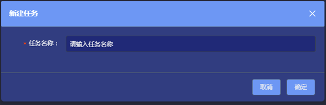

关系分析-用户操作手册
支持浏览器是Google Chrome 60.0.3112.113及以上版本登录界面
该页面输入正确用户名及密码登录成功跳转至主页面1:新增任务
登录系统后，页面默认显示第一个案件下的第一个任务最新保存的快照。将鼠标悬停在页面左侧案件树的某案件上，案件名称右侧显示任务添加按钮1.1:新增任务弹窗
 点击上图所示的添加按钮，弹出新建任务页面1.2:新增任务成功
输入任务名称，任务添加至该案件下，在案件名称下方，可以看到已经添加成功的任务。例如，输入任务名称：测试任务。点击“确定”后，页面如图示. 页面左侧显示任务已经添加成功，右侧显示任务的基本信息，包括：任务名称、案件名称、创建人以及创建时间。2:新建模型
点击头部菜单“添加-->添加节点”2.1:导入节点
在新增节点页面上，有“手动添加”和“使用案件标识”两种方式，页面默认显示手动添加方式： （1）下载模板：导入的文件以该模板为准 （2）导入：从本地导入号码 （3）清空：清空已导入的号码2.1.1:导入节点弹窗操作
选择新增类型，输入（多个号码使用换行分割）/导入号码，点击“确定”，如下图所示，成功导入50个号码，导入的号码如图方式显示2.1.2:案件标识导入
案件标识带入号码：在新增页面，点击“使用案件标识”，如果该案件下挂对象，对象显示2.1.3:案件标识导入结果
点击“确定”按钮，号码显示2.2:新建个体分析
所有模型的创建过程雷同，本文以“单人分析”为例，进行操作说明。 选中某节点，点击头部菜单“个体分析”，弹出新建单人分析模型页面，如图：（1）模型名称：填写任务名称。（系统会自动给定默认名称，用户也可自定义名称，字符限制20个。）（必填项） （2）对象类型：下拉框选择模型的对象类型（必填项）2.2.1:个体分析时间窗
时间范围：默认显示当月的时间。可自定义时间间隔，最大支持6个月，也可以使用快捷时间段，包括：一周，一个月，三个月，六个月，如图所示：2.2.2:个体分析窗口
（1）模糊搜索对象（2）删除对象 （3）关系类型：下拉框选择模型的对象类型（必填项） （4）标签类型：可以通过标签的筛选，控制结果的数量（如果不选择，默认跑出所有结果） （5）对象名称：显示模型对象，同时支持模糊搜索对象和删除对象（必填项），如图：2.3:查看结果说明
点击新建单人分析页面的“确定”按钮，任务提交成功，开始执行，执行成功后，在页面右侧可以看到执行成功的任务，如图所示 （1）搜索：按照模型名称搜索模型 （2）输入：结果中输入号码的个数，后面的百分比是在结果中，输入号码占比 （3）输出：结果中输出号码的个数，后面的百分比是在结果中，输出号码占比 （4）重发：模型重发 （5）删除：删除模型2.3.1:查看参数
查看参数：模型参数。点击“查看参数”按钮，弹出参数页面，如图所示：2.3.2:统计
点击右侧菜单“统计”按钮，如图所示 在统计页面，包括3部分信息： （1）基本信息：点击“统计”按钮，在页面右侧显示该任务的信息。基本信息根据选择的对象不同显示不同的内容，包括：整体信息、团体信息、个体信息。 a.整体信息：点击“统计”按钮，默认显示整体信息 b.团体信息2.3.3:统计模块说明
在画布中，任务关系图的右上方有团体色卡，单击选中团体，右侧显示该团体的相关信息，包括：平均关联次数、亲密度、稳固度，以及该团体下的对象和关系。如图所示：2.3.4:统计模块说明
双击团体色卡，右侧显示该团体的相关信息，且该团体的所有对象被选中，如图所示：2.3.5:统计
个体信息：画布中，单击要查看详细信息的节点，右键->选择->显示关联节点，页面右侧显示个体信息。对象统计：默认显示所有对象信息，按类型分组如图所示2.3.6:统计模块说明
a：搜索对象：支持模糊搜索过滤 b：点击手机号码字样前的小箭头，展开所有对象2.3.7:统计模块说明
社交指数：显示当前对象类型社交指数。点击“社交指数”按钮，弹出社交指数页面，社交指数页面支持模糊搜索和排序，单击每一个字段名称，可以排序 d：单击某对象，该对象在关系图上被选中，红色高亮显示 （3）关系：默认显示所有关系信息 如图所示2.3.8:统计说明
a：搜索关系：支持模糊搜索过滤 b：点击关系类型字样前的小箭头，展开所有关系 c：单击关系名称，可以在画布上关系图中绘画出从服务号码到对方号码2.4:分析
 点击右侧菜单“分析”按钮，在分析页面显示属性标签、0/1标签、自定义标记。如图所示：
点击右侧菜单“分析”按钮，在分析页面显示属性标签、0/1标签、自定义标记。如图所示：
2.4.1:分析模块说明
（1）标签属性：统计每个标签的个数，单击某标签名称，在关系图上显示该标签内容，操作步骤如下： 选择右侧菜单下的标签，单击标签名称，此时在画布右下角，标签指标从0滑动至10，自动打开（当标签指标指在0时，标签处于关闭状态），同时点击的标签内容显示在画布中，如下图，同时选中标签“服务号码”、“来源地”、“机主姓名”：画布中的标签内容会按照右侧菜单中的标签顺序显示（一次最多只能查看5个标签内容）2.4.2:分析说明
0/1标签：单击0/1标签中的标签名称，关系图中存在该属性的对象被选中，且红色高亮显示，如下图，单击标签“是否与边境通联” 存在“是否与边境通联”的节点红色高亮显示在关系图中。2.4.3:分析
（3）自定义标记：统计关系图中自定义标记的内容以及个数，点击自定义标记中的标记，关系图中对应节点红色高亮显示。如图所示2.5:工具栏说明
模型跑完后，关系图如所示：（1）鼠标移动 显示的是关系图上的一些说明和需注意的操作 （2）（3）（4）是选中节点的工具 （5）是反选按钮 （6）可以放大、缩小关系图 （7）对关系图中某区域放大、缩小 （8）删除关系图中节点 （9）撤回上一步操作 （10）对某节点隐藏/显示 （11）节点锁定/解锁。（节点锁定后，不能进行拖动，删除操作） （12）是刷新为原图2.5.1:工具栏说明
（13）是寻找两个号码的最短路径。在网络关系图上选中两个点，点击该按钮，在网络图上描绘出两点之间的最短距离，如图所示2.5.2:工具栏说明
（14）是图上有选中节点时可导出选中节点的标签信息 （15）是下载图片，即会把当前图上的信息以图片形式保存2.5.3:工具栏说明
（16）是用户在过滤 隐藏部分数据之后，可进行快照保存，保存的快照在头部菜单位置查看，在左侧选中案件下某任务，点击头部菜单“快照”按钮，可以查看保存的快照；已经保存的快照仍然可以打开继续分析。2.5.4:工具栏说明
 （17）是图形指标。点击“图形指标”按钮，关系图左下方出现图形指标，如图所示：
（1）节点指标：拖动滑块进行缩放当前点的大小和间隙
（2）标签指标：拖动滑块动态控制标签显示，根据点和线的比例在适当的大小（3）联络指标：区分输入输出的前提下，值越高，与输入号码的关系就越紧密
（4）核心指标：不区分输入输出的前提下，值越高，表示内部联系越紧密
注：联络指标和核心指标只在模型为群组分析时显示
（17）是图形指标。点击“图形指标”按钮，关系图左下方出现图形指标，如图所示：
（1）节点指标：拖动滑块进行缩放当前点的大小和间隙
（2）标签指标：拖动滑块动态控制标签显示，根据点和线的比例在适当的大小（3）联络指标：区分输入输出的前提下，值越高，与输入号码的关系就越紧密
（4）核心指标：不区分输入输出的前提下，值越高，表示内部联系越紧密
注：联络指标和核心指标只在模型为群组分析时显示
2.6:右键菜单说明
1.标记：选中某节点，右键-->标记，如下图所示 （1）添加标记：选中节点，“右键-->标记-->添加标记”按钮，弹出增加按钮页面，支持在当前用户已添加过的标记中多选，也可以新增标记。2.6.1:右键菜单说明
添加标记后，在关系图上，被标记的节点出现小对勾，同时鼠标悬停在该节点上，会显示标记的内容，如下图 （1）删除所有标记：选中节点，“右键-->标记-->删除所有标记”按钮，弹出删除所有标记对话框，点击“确定”，删除标记； （2）删除某标记：如果一个节点被添加多个标记，对某标记删除。选中节点，2.6.2:右键菜单说明
“右键-->标记-->添加标记”按钮，可以看到在该节点上，添加的所有标记，如图所示： 在每个标记后面都有删除按钮，可以通过每个标记后面的删除按钮，对确定标记删除。2.6.3:右键菜单说明
标记显示：对关系图上的节点自定义添加/删除后，在“右侧菜单-->分析”显示，如图： 在该图中，对节点做了3个标记，分别为“测试标记”“测试标记1”“测试标记2”，点击自定义标记中某标记，可以定位到关系图中该点。2.6.4:右键菜单说明
2.布局：在画布中，“右键-->布局”按钮，画布中的关系图可以根据不同的方式展现。有5种方式布局，如下图：2.6.5:右键菜单说明
3.聚合：选中节点，“右键-->聚合”按钮 （1）拆分节点：将选中点的实体属性拆分出新节点，展现与图上已有节点的关系 （2）合并节点：将两个用户认为意义相同的节点合并 在关系图上，选中两个节点，其中在一个点上“右键-->聚合-->合并节点”，弹出合并节点页面 选择需要合并的对象，点击“确定”按钮，在关系图上看到，两个节点被合并为一个。同时在右侧的“统计--对象”中，对象个数减1。2.6.6:右键菜单说明
自由组合：将选中节点定义为一个组合。框选需要组合的节点，“右键-->聚合-->手动组合”，如图所示： 组合后的节点可以同时放大/缩小，隐藏/显示，锁定/解锁，删除等。 组合后的节点，如果需要取消组合，在一个节点上，“右键-->聚合-->取消组合”。 团体组合：将团体定义成各自的组合，可统一操作。操作方法同“手动组合”2.6.7:右键菜单说明
4.操作：“右键-->操作”，如图： （1）添加节点：点击“右键-->操作-->添加节点”，弹出新增节点页面，同头部菜单的添加节点。2.6.8:右键菜单说明
添加关系：选定要添加关系的节点，点击“右键-->操作-->添加关系”，会有一条连线显示在画布中，将其指向另一个需要连接的点，关系生成，同时在右侧菜单“统计-->关系”中新增一条关系。如图所示： 节点上的关系可以指向另外一个需要添加的节点。 隐藏：隐藏节点 删除：删除节点2.6.9:右键菜单说明
节点编辑：支持节点图标的编辑。选中节点，“右键-->操作-->节点编辑”，弹出节点编辑页面，如图： 可选择默认图标编辑节点，也支持用户上传自定义图标2.6.9.1:右键菜单说明
选择图标后，点击“确定”按钮，可以看到关系图中的节点变为编辑后的图标。如图所示：2.7:右键分析
全面扩线：选择某节点，“右键-->分析-->扩线”，弹出扩线设置页面，如图所示： 选择关系类型和时间范围，点击“提交”按钮，在关系图上会显示与被扩线节点有关系的点。2.7.1:右键分析说明
6.选择：选中节点，“右键-->选择” （1）全选关系：选中全部关系，所有的关系红色高亮显示，如图：2.7.2:右键分析说明
（2）全选节点2.7.3:分析
（3）显示关联节点 选中节点（红色），“右键-->选择-->显示关联节点”，与选中节点有关系的节点显示，其他节点置灰2.7.4:右键分析说明
（4）反选其他：高亮显示除所选节点之外的的所有节点。如下图，选中最中间点，“右键-->选择-->反选其他”：2.8:其他功能说明
登录进入系统后，页面上方的按钮2.9:左侧菜单
进入系统，页面左侧显示案件树，如图 点击左上角案件设置按钮，弹出案件树设置页面，如下2.9.1所示：2.9.1:左侧菜单
可以对“状态”“部门”“类型”进行设置，按照不同的层级显示。2.9.2:左侧菜单
可以对“案件名称”进行编辑，重新命名。